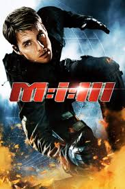
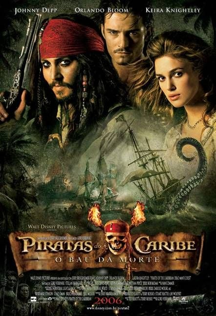
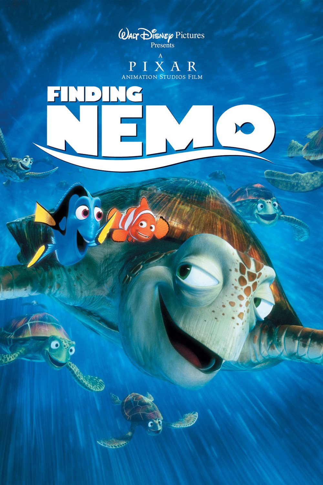
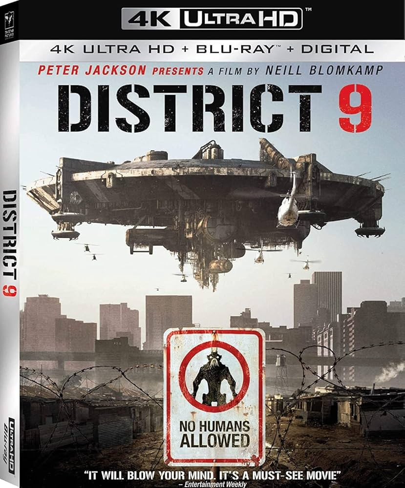

Os Incríveis (2004)
Uma família de super-heróis aposentados precisa voltar à ação para enfrentar um novo vilão.
Duração: 1h 55min
Estreia no Cinema Retrô: 12/11/2025
Classificação: ⭐ Livre

Missão: Impossível 3 (2006)
Ethan Hunt volta à ativa quando sua noiva é alvo de um traficante de armas poderoso.
Duração: 2h6m
Estreia no Cinema Retrô: 05/05/2006
Classificação:⭐ 12 anos

Homem de Ferro (2008)
Após ser capturado, o bilionário Tony Stark cria uma armadura tecnológica para sobreviver — e acaba se tornando o herói Homem de Ferro.
Duração: 2h6m
Estreia no Cinema Retrô: 02/05/2008
Classificação:⭐ 12 anos

Piratas do Caribe: O Baú da Morte (2006)
Jack Sparrow tenta escapar de uma dívida com o lendário Davy Jones, enquanto enfrenta criaturas marinhas e maldições perigosas.
Duração: 2h31m
Estreia no Cinema Retrô: 07/07/2006
Classificação:⭐ 12 anos

Procurando Nemo (2003)
Após seu filho ser capturado por humanos, um peixe-palhaço atravessa o oceano para resgatá-lo, enfrentando desafios e fazendo novos amigos.
Duração: 1h40m
Estreia no Cinema Retrô: 30/05/2003
Classificação: ⭐ Livre

Ratatouille (2007)
Remy, um rato com talento para a culinária, faz uma parceria improvável com um jovem cozinheiro para criar pratos incríveis em Paris.
Duração: 1h51m
Estreia no Cinema Retrô: 29/06/2007
Classificação: ⭐ Livre

UP – Altas Aventuras (2009)
Sinopse: Um idoso viúvo decide realizar o sonho de sua falecida esposa e parte para uma aventura amarrando milhares de balões em sua casa; inesperadamente leva junto um menino escoteiro.
Duração: 1h36m
Estreia no Cinema Retrô: 29/05/2009
Classificação: ⭐ Livre

Eu, Robô (2004)
Sinopse: Em um futuro onde robôs são parte do cotidiano, um detetive investiga um possível assassinato cometido por uma inteligência artificial — levantando questões sobre livre-arbítrio e perigo tecnológico.
Duração: 1h55m
Estreia no Cinema Retrô: 16/07/2004
Classificação: ⭐ 12 anos
Guerra dos Mundos (2005)
Sinopse: Após uma invasão alienígena apocalíptica, um pai luta para proteger seus filhos e atravessar um mundo destruído em busca de sobrevivência.
Duração: 1h56m
Estreia no Cinema Retrô: 29/06/2005
Classificação: ⭐ 12 anos

Distrito 9 (2009)
Sinopse: Alienígenas confinados em favela na África do Sul vivem à margem da sociedade até que um agente se envolve em um incidente que transforma sua vida e provoca uma visão brutal sobre segregação.
Duração: 1h52m
Estreia no Cinema Retrô: 14/08/2009
Classificação: ⭐ 16 anos

Avatar (2009)
Sinopse: Um ex-fuzileiro é enviado ao planeta Pandora em um programa que usa corpos alienígenas; ele acaba se envolvendo com os nativos e questionando a missão humana no planeta.
Duração: 2h42m
Estreia no Cinema Retrô: 18/12/2009
Classificação: ⭐ 12 anos

Menina de Ouro (2004)
Sinopse: Uma jovem determinada busca se tornar boxeadora profissional e encontra em um treinador rígido a figura paterna que nunca teve.
Duração: 2h12m
Estreia no Cinema Retrô: 15/12/2004
Classificação: ⭐ 12 anos

O Curioso Caso de Benjamin Button (2008)
Sinopse: Benjamin nasce idoso e rejuvenesce com o tempo, vivendo uma história de amor impossível marcada por perdas e descobertas.
Duração: 2h46m
Estreia no Cinema Retrô: 25/12/2008
Classificação: ⭐ 12 anos

Sempre ao Seu Lado (Hachiko) (2009)
Sinopse: Baseado em fatos reais, conta a história emocionante de um cão que espera por seu dono todos os dias, mesmo após sua morte.
Duração: 1h33m
Estreia no Cinema Retrô: 13/06/2009
Classificação: ⭐ Livre

A Rede Social (2010)
Sinopse: O surgimento do Facebook e os conflitos envolvendo amizade, ambição e traições entre seus criadores.
Duração: 2h00m
Estreia no Cinema Retrô: 01/10/2010
Classificação: ⭐ 12 anos

Escola de Rock (2003)
Sinopse: Um músico falido começa a dar aula substituindo um professor e transforma sua turma em uma banda de rock.
Duração: 1h49m
Estreia no Cinema Retrô: 03/10/2003
Classificação: ⭐ Livre

As Branquelas (2004)
Sinopse: Dois agentes do FBI se disfarçam como socialites para resolver um sequestro, causando caos e muita comédia.
Duração: 1h49m
Estreia no Cinema Retrô: 23/06/2004
Classificação: ⭐ 12 anos

Superbad – É Hoje (2007)
Sinopse: Dois amigos tentam aproveitar seus últimos dias no ensino médio e conquistar sua independência.
Duração: 1h53m
Estreia no Cinema Retrô: 17/08/2007
Classificação: ⭐ 16 anos

Se Beber, Não Case! (2009)
Sinopse: Após uma despedida de solteiro caótica em Las Vegas, três amigos precisam encontrar o noivo desaparecido.
Duração: 1h40m
Estreia no Cinema Retrô: 05/06/2009
Classificação: ⭐ 16 anos

O Chamado (2002)
Sinopse: Uma fita amaldiçoada leva seus espectadores à morte sete dias após assistirem ao conteúdo misterioso.
Duração: 1h55m
Estreia no Cinema Retrô: 18/10/2002
Classificação: ⭐ 14 anos

O Grito (2004)
Sinopse: Uma maldição se espalha após uma casa ser tomada por espíritos vingativos, afetando todos que entram nela.
Duração: 1h32m
Estreia no Cinema Retrô: 22/10/2004
Classificacao: ⭐ 14 anos

Atividade Paranormal (2007)
Sinopse: Um casal registra estranhos eventos em sua casa durante a madrugada, expondo uma presença demoníaca.
Duração: 1h26m
Estreia no Cinema Retrô: 14/09/2007
Classificação: ⭐ 14 anos

A Órfã (2009)
Sinopse: Após adotar uma menina misteriosa, um casal passa a viver eventos perturbadores envolvendo segredos sombrios.
Duração: 2h03m
Estreia no Cinema Retrô: 24/07/2009
Classificação: ⭐ 16 anos